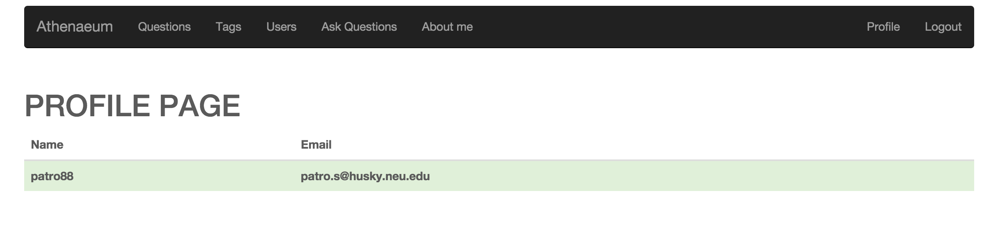
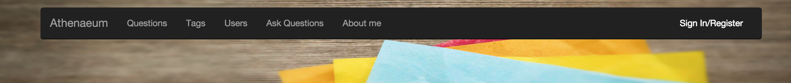

This experiment focuses on the logout part of the project. In logout , the user information is deleted from session. The cookie created for user is destroyed .
This is acheived by the passport's req.logOut() method.
Go to my project page and click login.
Go the project link and register yourself. A record will be created for you in the database and you can sign in using your credentials to view the profile page.
On login, the profile page is loaded. The signin/Register link is hidden and profile link and the logout link are displayed now.

After clicking logout, wherever the user is , he is routed to the home page and the signin/register link is displayed.

The scope attribut profile is updated to keep the profile and logout links show on login.
ng-show attribute is used to achieve this.
Also the ng-hide attribute is applied on sign in link to hide it on logout.
<ul class="nav navbar-nav navbar-right" ng-show="profile">
<li><a href="#/profile">Profile</a></li>
<li ng-show=><a href="#signup" data-toggle="modal" data-target=".bs-modal-sm">Sign In/Register</a></li>
<li><a href="#/logout" ng-click="logout()">Logout</a></li>
</ul>
<ul class="nav navbar-nav navbar-right" ng-hide="profile">
<li><a href="#signup" data-toggle="modal" data-target=".bs-modal-sm">Sign In/Register</a></li>
</ul>
Notice the use of logOut method of req object. This object helps to destroy the login information of the current user.
app.post('/logout', function(req, res)
{
req.logOut();
res.send(200);
});
We set the scope parameters and the rootsope parameters on client side to null and navigate to home page.
$scope.logout = function(){
$http.post("/logout")
.success(function(){
$rootScope.currentUser = null;
$scope.profile = null;
$location.url("/home");
});
}